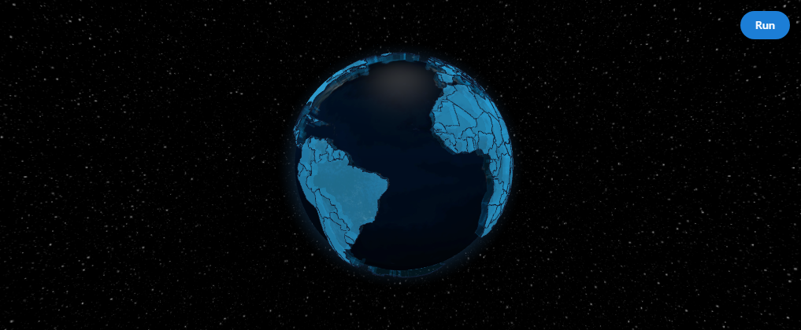
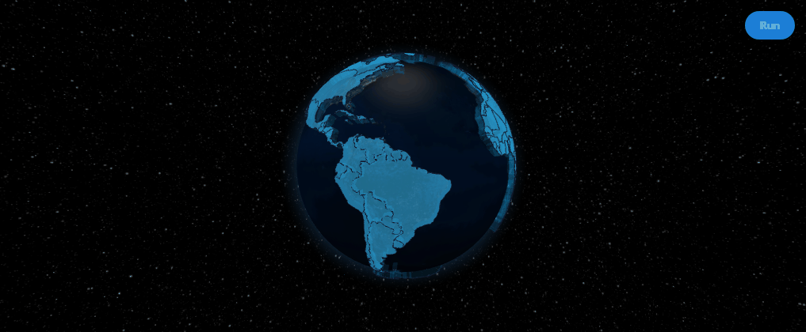
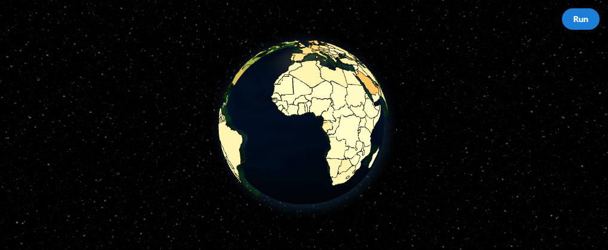
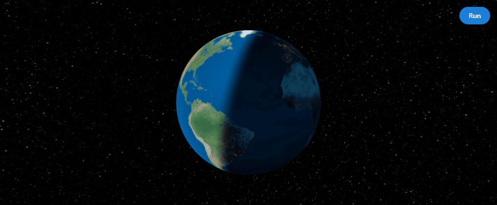

Figure-like API
update_layout, update_globe, add_points, add_arcs, and more — all chainable.
A figure-like Python API around react-globe.gl. Chain helpers, map your data with accessors, and wire globe events into normal Dash callbacks.

Built for Dash developers who want globe visualizations without dropping into raw Three.js. The 1.0 release locks in the chainable API, large-data helpers, and a docs-ready example gallery.
update_layout, update_globe, add_points, add_arcs, and more — all chainable.
Points, arcs, polygons, paths, heatmaps, hex bins, tiles, particles, rings, and labels.
clickData, hoverData, rightClickData, and currentView participate in normal callbacks.
data_url(...) and enable_large_data_mode() keep GeoJSON out of the Dash layout.
pip install dash-globe
Screenshots and short loops from the interactive gallery. Run the full gallery locally with
python usage.py.

Client-fetched GeoJSON with compact summary hover payloads.

GDP-per-capita country coloring with hover highlighting.

First-class day-night shader without raw Three.js materials.